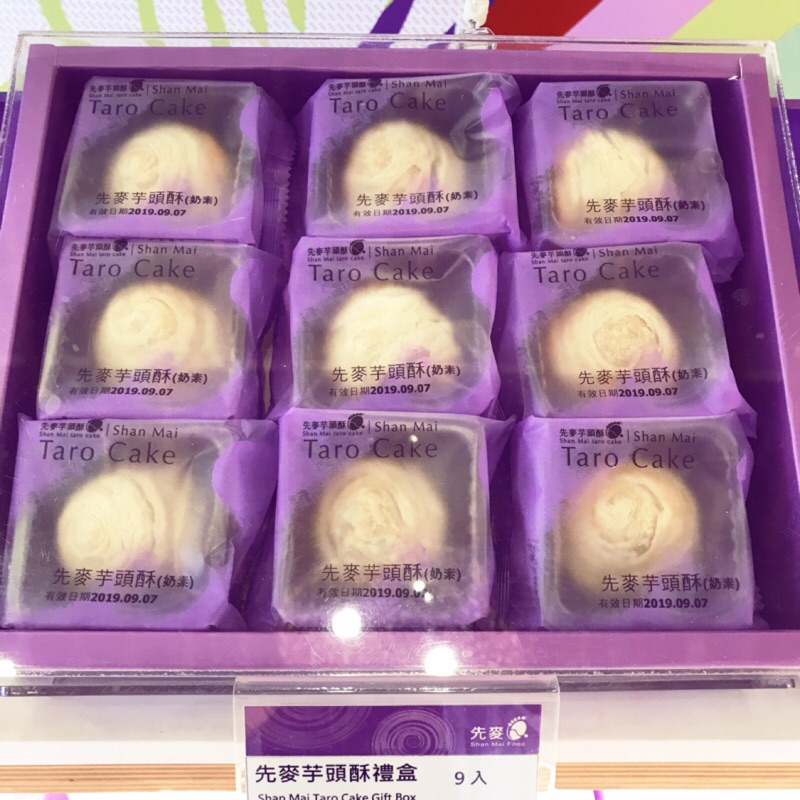

1.創始 聞名全省的大甲芋頭酥，係由先麥食品創始開發而成，劇先麥總經理吳生泉先生表示，明國86~87年間，大甲的芋頭產量過盛， 價格隨之下跌，芋農於是將芋頭送給先麥，當時吳總經理靈機一動， 心想或許可以用芋頭為為大甲重新定位， 希望塑造〝芋頭=大甲=先麥〞的直覺連鎖反應， 並藉此回饋鄉里，於是著手研發〝芋頭酥〞，此為〝先麥芋頭酥〞的由來。 2.成就 台灣芋頭酥是由先麥發明創造 ，純手工製作，一顆芋頭僅取45%的精華製作， 並特別推出先麥台灣金愛餅土鳳梨酥、先麥芋頭牛軋糖、先麥芋頭冰淇淋、先麥芋頭小酥餅…等創意作品； 「先麥芋頭酥」一顆熱量只有147大卡，以烘培取代油炸， 榮獲經濟部台灣具代表性十五大伴手禮、德國IF設計大獎， 更獲選為「國宴點心」的榮耀，是到台灣一遊必帶指名的伴手禮。 3.故事 原文網址 幫產品命名，搶救大甲芋頭 名聞遐邇的大甲芋頭酥，是這幾年快速竄起的中部名產，目前每年都有多達2000萬噸的需求量， 著名的九份芋圓、草湖芋仔冰，都標榜以大甲芋頭製成，2004年還被選為總統就職國宴糕點。 但不過十年前，大甲芋頭農業卻曾面臨生存關卡。 1969年生的先麥食品公司總經理吳生泉，看起來還是一臉學生樣，十分純樸，但卻是促使芋頭產業復甦的關鍵人物。 父親吳聰朝是有40多年手藝的糕餅老師傅。而吳生泉從學生時代就喜歡閱讀財經雜誌，常到外參加企管課程， 這些吸收新知的習慣，也成為他往後幫助公司轉型的創意來源。 1994年退伍後，吳生泉先從基層做起，到廚房學做餅、開車送貨、跑業務等統統來， 甚至還兼任會計。那六、七年，他每天過著7-11（早上7點出門、晚上11點回家）、累了就睡休息站的司機生活， 「為了省錢，那時我還會研究從哪個交流道先下去，就可以閃過收費站，順便跑下一家客戶的走法，」他笑著說。 不過他接棒時，卻是大甲芋頭農業的最低潮。由於生產過剩，每台斤芋頭只剩3塊錢的行情，農民個個苦不堪言。 為了幫農民找出路，1998年，吳聰朝嘗試用芋頭作原料，開發出「芋頭酥」這項新品。 而吳生泉更大膽幫父親想出「阿聰師」做為產品品牌，並以芋頭的紫色做為設計主調，從產品包裝、店頭裝潢到貨運車輛，  全部都是同一色系，並開發自有通路銷售。 想不到此舉真的奏效，造成芋頭酥的大熱賣。目前工廠每日產量高達1萬顆，芋頭行情更狂升到每台斤20元以上， 種植面積也從當初不到300公頃，倍增至600公頃。 而先麥也由當時只有八人的小糕餅店，成長到如今近80人的中型企業規模，並在全省擁有七家直營門市。 讓工廠說自己的故事，推動體驗經濟 腦筋動得快的吳生泉，六年前就把工廠挪出一部分做展示間，開放顧客參觀，打算用體驗經濟的方式推廣品牌及企業形象。 想不到參觀人潮絡繹不絕，吳生泉決定擴大規模，向銀行貸款4000萬買下幼獅工業區的800坪廠房，除了當作公司研發中心與生產重鎮， 還把一、二樓規劃成「先麥芋頭文化觀光工廠」。 這麼大的投資，對當時規模仍小的先麥來說，可是歷經過一番掙扎。為求心安，父子倆還到大甲鎮瀾宮擲筊問媽祖，結果丟出聖筊才敢投資。 2003年，先麥芋頭文化觀光工廠開幕，劃分為芋頭生態解說、營養價值、產業史、酥糕餅DIY、家族故事、婚禮習俗等八個主題區， 先麥更加入政府的觀光工廠輔導計畫，請專家幫助軟體及服務功能的改善。 走進這座觀光工廠，猶如穿梭在大甲芋頭業的歷史迴廊，除了認識芋頭酥的起源與背後含意， 從周遭陳列的古早糕餅機具，老舊的廣告招牌及生鏽的糕餅模子，遊客也彷彿見證阿聰師這40多年的發跡故事。 站在與人齊高的雙層直立式烘焙機旁，吳生泉笑著說，「這台跟我同年喔！都是1969年到我們家報到的。 現在，連外賓來到台中，也會到芋頭文化觀光工廠參觀，前年更被縣府文化局評選為台中縣「藝術之店」。 善用時事話題的靈活行銷術。 除了善於設計產品與廠區環境，吳生泉還會與時事結合，推出各種不同的新品，吸引消費者的目光。 像是結合芋頭跟番薯兩種原料的「台灣愛餅」，不但象徵族群融合，台語唸起來更有「台灣要拚」的諧音，並且還用國土形狀的象牙白陶盒做包裝。 後來開設的特色餐廳「鐵砧養芋料理之家」，也是用大甲當地的鐵砧山命名，最近，公司還推出阿聰師的祕密水缸等周邊紀念品。 目前不含DIY收費，先麥的觀光工廠就有平均250元的客單價，每月可貢獻近百萬業績。但限於廠區面積有限，無法同時容納超過200人， 因此業績似乎已到瓶頸。 此外，由於位在工業區，周遭停車與交通指引都是問題，不方便遊客頻繁進出，因此先麥只接待30人以上的團體客，而且須事先預約才開放參觀。 為突破廠區限制，提升旅遊內容的豐富度，先麥也整合旗下零售門市及餐飲店，加上大甲鎮上的鎮瀾宮、文昌祠、天老街等名勝， 規劃出一套大甲一日遊的觀光行程。 雖然已是足以代表大甲、台中的聞名特產，但吳生泉卻笑著說，「我的目標，是要能代表台灣！」說著說著，他腦袋裡似乎又冒出了一堆新創意。 4.材料 食材：內餡、芋頭、油皮、細砂糖、中筋麵粉、油酥、無鹽奶油、低筋麵粉、奶粉、無水奶油、Q心仁（麻糬）、糖粉、紫薯粉、鹽巴、冰水
來源(1)